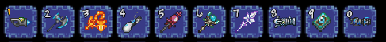

Inventory trong Terraria là giao diện quản lý vật phẩm cho phép người chơi lưu trữ và sắp xếp tài nguyên, công cụ, và trang bị cần thiết trong suốt hành trình khám phá. Giao diện Inventory bao gồm:
Ô Chứa Chính: Phần này có khoảng 40 ô lưu trữ, nơi người chơi giữ các vật phẩm nhặt được trong quá trình chơi như tài nguyên, thuốc, và các vật phẩm tiêu hao
Hotbar: Phía trên cùng của Inventory, chứa tối đa 10 ô và hiển thị ngay trên màn hình chính. Đây là nơi người chơi đặt các công cụ và vũ khí sử dụng thường xuyên để truy cập nhanh chóng bằng phím tắt từ 1 đến 0.
Giáp: Gồm ba ô (nón, áo, và quần) để trang bị áo giáp bảo vệ.
Phụ Kiện: Có 5 ô phụ kiện, nơi người chơi trang bị thêm vật phẩm giúp tăng cường sức mạnh hoặc khả năng đặc biệt (ví dụ như nhảy cao, bay, hay miễn nhiễm sát thương từ môi trường).
Ô Xã Giao (Social Slots): Cho phép người chơi đặt trang bị chỉ để hiển thị mà không ảnh hưởng đến chỉ số, giúp tùy chỉnh ngoại hình nhân vật.
Ô Công Cụ (Tool Slots): Phần riêng biệt cho các công cụ cơ bản như cuốc, búa và rìu. Những vật phẩm này không chiếm ô trong Inventory chính.
Ô Đạn và Thuốc (Ammo and Potion Slots): Các ô dành riêng cho đạn của vũ khí tầm xa và các loại thuốc hồi máu, mana, và buff, giúp tiết kiệm không gian cho các vật phẩm cần thiết khác.
Các tính năng quản lý tiện dụng như:
+, Auto-Sort (tự động sắp xếp vật phẩm).
+. Quick Stack (chuyển nhanh các vật phẩm trùng vào rương gần đó). +, Trash (ô rác để xóa vật phẩm) giúp người chơi duy trì Inventory bằng cách đào thải một số vật phẩm.
Inventory trong Terraria không chỉ là nơi lưu trữ mà còn là công cụ quan trọng giúp người chơi chuẩn bị tốt cho mọi tình huống trong hành trình khám phá và chiến đấu.
{kind=link}
{kind=link}
{kind=link}
{kind=link}